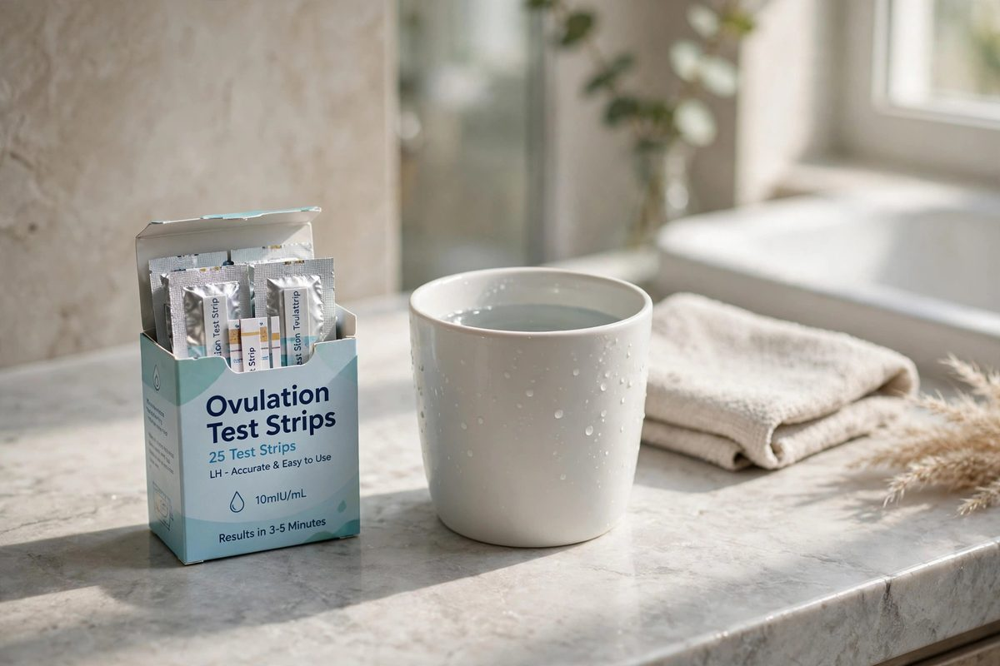

Ovulation Test Strips: How to Use Them
How LH test strips work, when to test, how to read the lines, and the mistakes that cause false results.
Ovulation test strips detect the surge in luteinising hormone, or LH, that triggers ovulation about 24 to 36 hours later. They are cheap, widely available, and far more precise than calendar maths alone, because they measure a real hormonal event instead of estimating from dates. Used well, they tell you that your fertile window is at its peak. This guide explains when to start testing, how to read the result, and what can go wrong.
How the strips work
The strips work like pregnancy tests: you dip one in urine, and a line appears if LH is present above a threshold. The LH surge is a sharp rise that happens one to two days before ovulation, so a positive strip means ovulation is likely within the next day or so. The test does not confirm that ovulation actually happened, only that the hormonal signal was sent. Most of the time the egg follows, but in some cycles, especially with conditions like polycystic ovary syndrome, the surge can happen without ovulation, which is why the strips are a guide rather than a guarantee.
When to start testing
Start testing a few days before your expected ovulation. For a 28-day cycle, that usually means starting around day 11, counting the first day of your period as day one. For a longer cycle, start later; for a shorter cycle, start earlier. A good rule is to begin testing about five days before the ovulation date your calculator gives you, and test once a day at first. If you have irregular cycles, start earlier and test daily until you get a positive, because the surge can come at an unexpected time.
How to read the result
A positive result is when the test line is as dark as, or darker than, the control line. A faint test line that is lighter than the control is negative: LH is present at a low level all cycle, so a faint line is normal. Read the strip at the time stated in the instructions, usually after three to five minutes, because a line that appears much later can be misleading. When you get a positive, your most fertile days are that day and the next two days. Testing twice a day, late morning and evening, catches short surges that a single daily test can miss.
Tips for accurate testing
Use the same time each day, and avoid drinking large amounts of fluid in the two hours before testing, because dilute urine can weaken the result. First morning urine is not ideal for LH tests, because the surge often builds during the day; late morning or early afternoon is usually better. Do not use a strip that is past its expiry date, and store them somewhere dry. If you get positives for several days in a row, the first positive is the one that counts, and you can stop testing for that cycle once you have it.
When the strips do not work well
Strips are less reliable if your cycles are very irregular, if you have polycystic ovary syndrome, which can cause repeated LH surges, or if you are taking fertility medicines that contain LH or hCG. They can also be hard to read if your urine is very dilute or if you test at inconsistent times. In those cases, combine the strips with cervical mucus tracking and temperature charting, and talk to a doctor if you get confusing results for several cycles. The strips are a tool, not a diagnosis, and persistent confusion is itself a reason to seek advice.
A worked example of a testing week
Take a 28-day cycle with ovulation expected around day 14. Start testing on day 10, once a day in the late morning, and record each result. Day 10 and 11 show a faint test line, lighter than the control: negative. Day 12 shows a line nearly as dark as the control: still negative, but close. Day 13 shows a test line as dark as the control: positive, so ovulation is likely within 24 to 36 hours, and the most fertile days are day 13, 14 and 15. You can stop testing for this cycle once you have the positive. If no positive appears by day 18, keep testing daily, because ovulation may be late, and if no positive appears all cycle, try testing twice a day next month, in case the surge is short and was missed.
Frequently Asked Questions
When should I start using ovulation strips?
About five days before your expected ovulation date. For a 28-day cycle that is usually around day 11.
How soon after a positive test do I ovulate?
Usually within 24 to 36 hours. Your most fertile days are the day of the positive and the two days after it.
Can I get a positive test and not ovulate?
Yes, occasionally. The surge signals ovulation is coming, but the egg does not always follow, especially with PCOS.